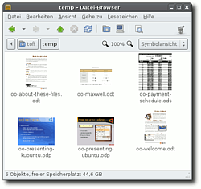

OpenDocument Thumbnails
Dieser Artikel wurde für die folgenden Ubuntu-Versionen getestet:
Dieser Artikel ist mit keiner aktuell unterstützten Ubuntu-Version getestet! Bitte diesen Artikel testen und das getestet-Tag entsprechend anpassen.
Zum Verständnis dieses Artikels sind folgende Seiten hilfreich:
Die folgende Anleitung beschreibt, wie man mit ein paar recht einfachen Schritten OpenDocument-Dokumente, die mit Hilfe von den gängigen Büroanwendungen erstellt worden sind, im Dateimanager Nautilus nicht mehr einfach als Icon dargestellt, sondern als kleine Vorschau, so wie man es von Bildern oder auch Filmen gewohnt ist. Diese Vorschaubilder nennt man auch Thumbnail. Es gibt hierbei drei Lösungsmöglichkeiten:
libgsf
 ,
,das Python-Skript opendocument-thumbnailer und
das Paket ooo-thumbnailer.
Ab Ubuntu 11.10 läuft die Erstellung von Thumbnails in Nautilus anders. Hier funktioniert nur noch eine modifizierte Lösung mit libgsf oder die Verwendung eines aktualisierten ooo-thumbnailer Pakets.

libgsf¶
Alle Ubuntuversionen¶
Eine einfache Vorgehensweise, um Thumbnails von OpenDocument-Dokumente zu erstellen, kann mit dem Programm libgsf erreicht werden. Durch einen im Paket enthaltenen VBA-Makro-Extractor können auch Thumbnails von Dokumenten erstellt werden, die mit Microsofts Office-Suite (nur .docx, .xlsx und .pptx) erstellt worden sind. Hierfür ist das Programm
libgsf-bin
 mit apturl
mit apturl
Paketliste zum Kopieren:
sudo apt-get install libgsf-bin
sudo aptitude install libgsf-bin
zu installieren. Da dieses Programm den Befehl convert benutzt, sollte sichergestellt werden, das auch das Paket
imagemagick
mit apturl
Paketliste zum Kopieren:
sudo apt-get install imagemagick
sudo aptitude install imagemagick
installiert sein.
Um die Thumbnails erzeugen zu lassen, muss Nautilus neu gestartet werden. Ab jetzt sollten alle OpenDocument-Files mit einem Vorschaubildern versehen werden. Auch hier gilt der Hinweis:
Hinweis:
Nach dem Speichern muss der Ordner ~./thumbnails gelöscht und Nautilus neu gestartet werden, damit die Vorschaubilder erzeugt werden.
Einrichtung¶
Nach Installation der obigen Pakete legt man unter der Verzeichnis /usr/share/thumbnailers/ mit Rootrechten [5] eine neue Datei DATEINAME.thumbnailer (z.B. libreoffice.thumbnailer) an, z.B. mit dem Befehl
sudo touch /usr/share/thumbnailers/DATEINAME.thumbnailer
Danach wird die Datei mit Root-Rechten zum Bearbeiten mit einem Texteditor [4] geöffnet und folgender Inhalt eingefügt:
[Thumbnailer Entry] TryExec=/usr/bin/gsf-office-thumbnailer Exec=/usr/bin/gsf-office-thumbnailer -i %i -o %o -s %s MimeType=application/vnd.oasis.opendocument.graphics;application/vnd.oasis.opendocument.graphics-template;application/vnd.oasis.opendocument.formula;application/vnd.oasis.opendocument.text-master;application/vnd.oasis.opendocument.presentation;application/vnd.oasis.opendocument.presentation-template;application/vnd.oasis.opendocument.spreadsheet;application/vnd.oasis.opendocument.spreadsheet-template;application/vnd.oasis.opendocument.text;application/vnd.oasis.opendocument.text-template;application/vnd.openxmlformats-officedocument.presentationml.presentation;application/vnd.openxmlformats-officedocument.spreadsheetml.sheet;application/vnd.openxmlformats-officedocument.wordprocessingml.document
Hinweis:
Nach dem Speichern muss der Ordner ~./thumbnails gelöscht und Nautilus neu gestartet werden, damit die Vorschaubilder erzeugt werden.
opendocument-thumbnailer¶
Vorgehensweise¶
Um die Thumbnails erstellen zu können, ist das Paket
python-imaging
mit apturl
Paketliste zum Kopieren:
sudo apt-get install python-imaging
sudo aptitude install python-imaging
erforderlich. Dies ist bei Standardinstallationen von K/Ed/Ubuntu bereits vorhanden. Andernfalls muss es installiert werden.
Anschließend muss die Datei opendocument-thumbnailer  heruntergeladen werden. Dann setzt man die Ausführrechte [3] und kopiert sie mit Root-Rechten in das Verzeichnis /usr/bin/.
heruntergeladen werden. Dann setzt man die Ausführrechte [3] und kopiert sie mit Root-Rechten in das Verzeichnis /usr/bin/.
Hinweis!
Fremdsoftware kann das System gefährden.
chmod 755 opendocument-thumbnailer sudo cp opendocument-thumbnailer /usr/bin
Die zweite Datei opendocument.schemas wird ebenfalls heruntergeladen und wieder mit Root-Rechten im Ordner /usr/share/gconf/schemas/ gespeichert.
chmod 755 opendocument.schemas sudo cp opendocument.schemas /usr/share/gconf/schemas
Will man den Effekt ohne einen Neustart von GNOME aktivieren, muss noch die opendocument.schemas GNOME bekannt gemacht werden (dies geschieht durch Ausführen des folgenden Befehls im Terminal, diesmal ohne sudo) [2]:
gconftool-2 --install-schema-file /usr/share/gconf/schemas/opendocument.schemas
und Nautilus neu gestartet werden.
Hinweis:
Eigentlich sollten jetzt die Thumbnails für OpenOffice-Dokumente generiert werden. Falls das noch immer nicht der Fall ist, sollte man versuchen den ~/.thumbnails-Ordner zu löschen und die Verzeichnisse mit den Dokumenten zu aktualisieren.
Erweiterte Einstellungen¶
Bei Bedarf kann man mit einem Editor [4] die ersten Variablen im Skript opendocument-thumbnailer seinen Bedürfnissen anpassen. So lassen sich folgende Änderungen modifizieren:
| Variable | Veränderung |
ICON_USE_CURRENT_THEME | Stellt ein, ob das eingestellte Icon-Design verwendet werden soll oder ob ein dediziertes Icon-Design festgelegt wird. |
ICON_PATH_BASE | Diese Option legt das dezidierte Icon-Design fest (siehe vorherige Zeile). |
ICON_OPACITY | Legt die Transparenz der Thumbnail-Icons fest. |
THUMBNAIL_BACKGROUND_COLOR | Legt die Hintergrundfarbe der Thumbnail-Icons fest. |
Links¶
Ursprüngliches Tutorial von minio
aus dem englischen Ubuntu Forumsvgz Thumbnails - Vorschau für svgz-Dateien in Nautilus
- Erstellt mit Inyoka
-
 2004 – 2017 ubuntuusers.de • Einige Rechte vorbehalten
2004 – 2017 ubuntuusers.de • Einige Rechte vorbehalten
Lizenz • Kontakt • Datenschutz • Impressum • Serverstatus -
Serverhousing gespendet von